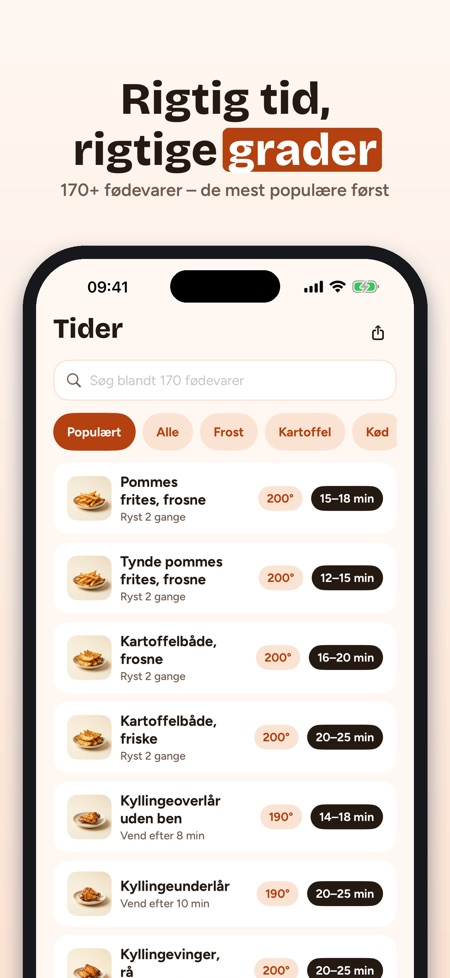
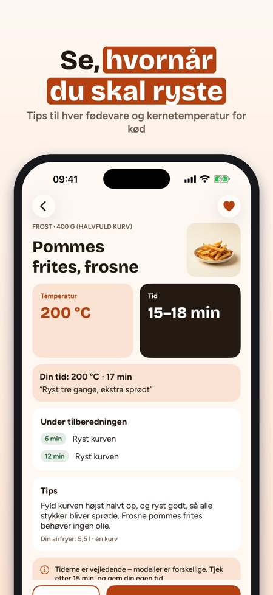
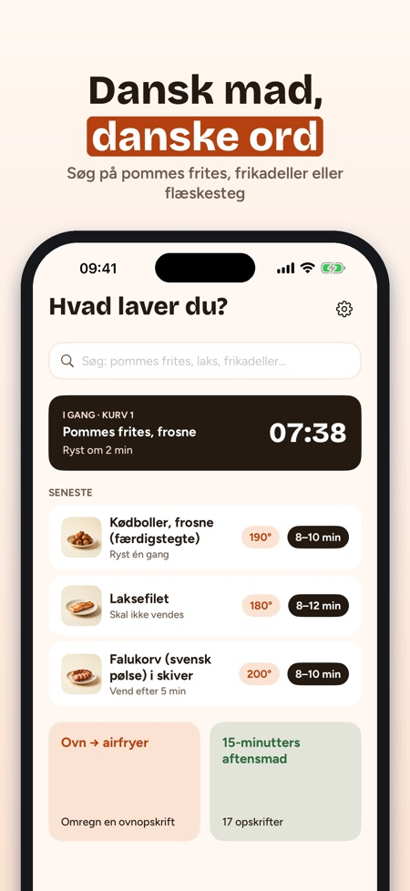

Tider, grader og timer. Ny airfryer til jul? Krispa viser tid og grader for 170+ fødevarer – og nedtællingen vises på låseskærmen. Nyt: æbleskiver og juleopskrifter.



Rigtig tid og temperatur – på dansk.
Ingen reklamer, ingen konto – tidstabellen virker uden køb.
Krispa er airfryer-appen til danske køkkener: hvor længe og hvor varmt for 170+ fødevarer, en omregner til ovnopskrifter og timere, der minder dig om at ryste kurven.
TIDSTABEL FOR 170+ FØDEVARER
• Frosne pommes frites, frikadeller, fiskefrikadeller, kylling, laks, grøntsager, brød og snacks
• Temperatur, tidsinterval og hvornår du skal ryste eller vende
• Søg på dansk – "pommes", "laks", "frikadeller"
• Tips om mængde, olie og hvordan det bliver sprødt
OVN → AIRFRYER
• Indtast ovnens temperatur og tid (over-/undervarme eller varmluft)
• Få et forslag til airfryeren og hvornår du skal tjekke – en tommelfingerregel, tydeligt markeret som det
TIMERE DER SIGER TIL
• Besked når det er tid til at ryste eller vende, og når maden er klar
• To kurve? Krispa starter den korteste timer senere, så begge bliver klar samtidig
• Op til fire timere på én gang med Krispa Plus
• Nedtællingen vises på låseskærmen og i Dynamic Island
68 EGNE OPSKRIFTER
• Hverdagsaftensmad, tilbehør, snacks, bagning og julemad
• Skift antal portioner – mængderne regnes om
• Madlavningstilstand trin for trin med timer pr. trin; skærmen forbliver tændt
• Indkøbsliste fra opskrifterne, sorteret efter afdeling
MINE TIDER
• Gem favoritter og din egen tid, temperatur og note – "vores pommes: 17 min, ryst tre gange"
FØDEVARESIKKERHED
Kylling, svinekød og hakket kød viser en laveste kernetemperatur – det strengeste råd blandt de nordiske fødevaremyndigheder. Fisk: tjek, at den er gennemstegt. Tiderne er vejledende – modellerne er forskellige, så tjek altid i god tid.
HJÆLP
Forvarmning, bagepapir, rengøring, placering og sikkerhed, hvid røg, to kurve og hvorfor maden ikke bliver sprød.
KRISPA PLUS
Tidstabellen, omregneren, én timer og 10 opskrifter er med uden køb. Krispa Plus åbner alle 68 opskrifter, op til fire timere, madlavningstilstand, egne tider og indkøbslisten. Vælg årsabonnement (fornyes automatisk, opsig når som helst i App Store-indstillingerne) eller et engangskøb. Nye abonnenter starter årsabonnementet med 7 dages prøveperiode.
Virker uden internet. Ingen konto. Krispa er ikke tilknyttet noget airfryer-mærke.